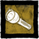

Çatapatlar - Firecrackers
| Resim | Adı | Açıklama | Dayanıklılık | Seyreklik |
| Chinese Firecracker | Dikkat dağıtma, kör edici bir cihaz veya kutlama için kullanılabilir. | 1 | Nadir | |
| Winter Party Starter | Dikkat dağıtma, kör edici bir cihaz veya kutlama için kullanılabilir. | 1 | Sıradan |
El Feneri - Flashlights

Fenerler Katilleri kör etmek için kullanılanılabilir. Eğer omuzlarında bir Hayatta kalan varsa, Katil körleştirirse bu Hayat kalanları bırakıp birkaç saniye sersemlemelerine sebep olacaktır . |
| Resim | Adı | Açıklama | Dayanıklılık | Seyreklik |
|  | Flashlight | Karanlıkta yolunuzu aydınlatmak için kullanılabilir. | 8 saniye | Nadir |
| Will O' Wisp | Hayatınızda Dostluk Hayaletleri oldukça arttırır . | 8 saniye | Nadir | |
| Sport Flashlight | El fenerinin pil tüketimini hafifçe azaltır. El Feneri'nin doğruluğunu hafifçe artırır . |
8 saniye | Nadir | |
| Utility Flashlight | Doğruluğu hafifçe azaltır . Kirişin görsel parlaklığını orta derecede arttırır . Körlük süresini orta derecede arttırır . |
12 saniye | Çok Nadir |